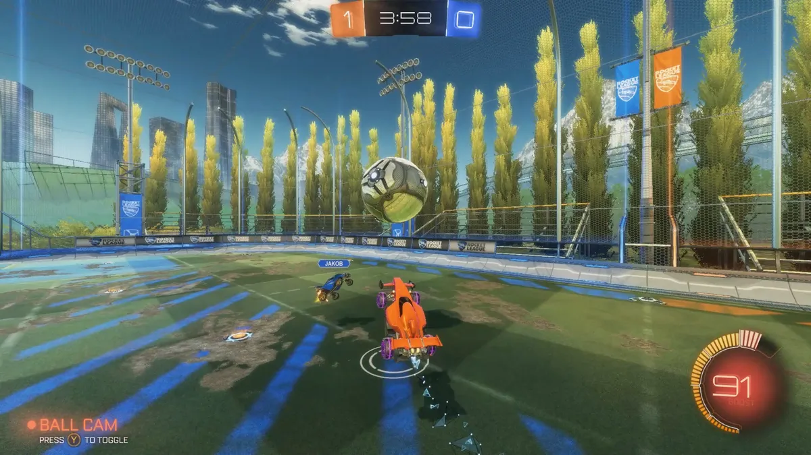

Rocket League es un videojuego que combina el fútbol con los vehículos. Fue desarrollado por Psyonix El juego se lanzó por primera vez para PlayStation 4 y Windows en julio de 2015, y más tarde se lanzaron ports para Xbox One y Nintendo Switch. En junio de 2016, 505 Games comenzó a distribuir una versión física minorista para PlayStation 4 y Xbox One, y Warner Bros.
